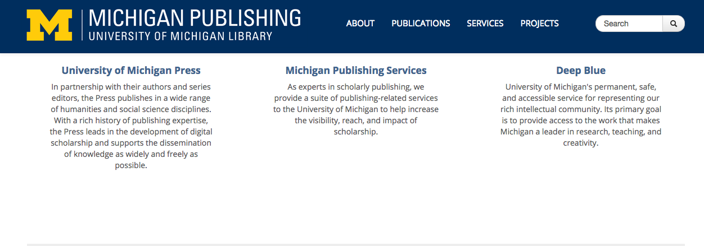
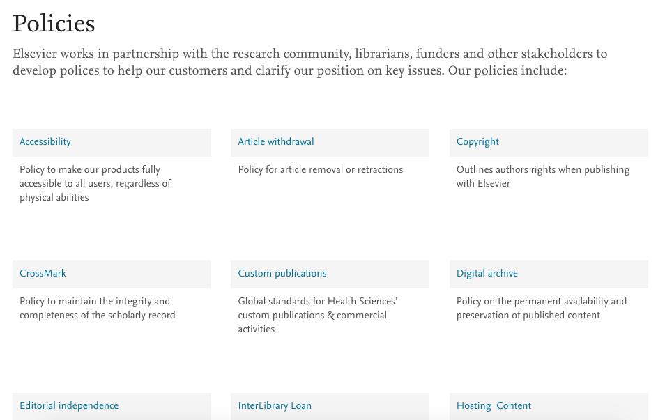

Jeffrey Sabol
Slides @ csudh.jeffreystephensabol.org
Opens up the research output of the university to the world.
Enables and encourages iinterdisciplinary approaches to research.
Facilitates the development and sharing of digital teaching materials and aids.
Findability
Faculty's participation
Institutional support
Born-digital, open source, media-rich scholarly publishing that's as easy as blogging.
Allows access to the Journal regardless of citizenship, geography or institutional affiliation.
Most reputable OA journals are built on a sustainable model to insure continued publication.
Reach a larger audience then even the most prestigious journals.
Puts in to practice the principles of a public university, namely the academic scholarship is a public good.
Does not have the exclusivity of most high impact journals
Article Processing Fees
Promotion and Tenure not aligned with OA journals
Library publisher mission:
For profit publisher mission:
Significatly lower cost than for profit publishers
Mostly open source, allowing for greater access to information.
Jeffrey Sabol
Slides @ csudh.jeffreystephensabol.org